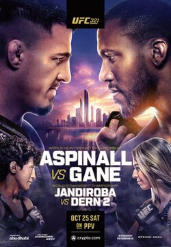
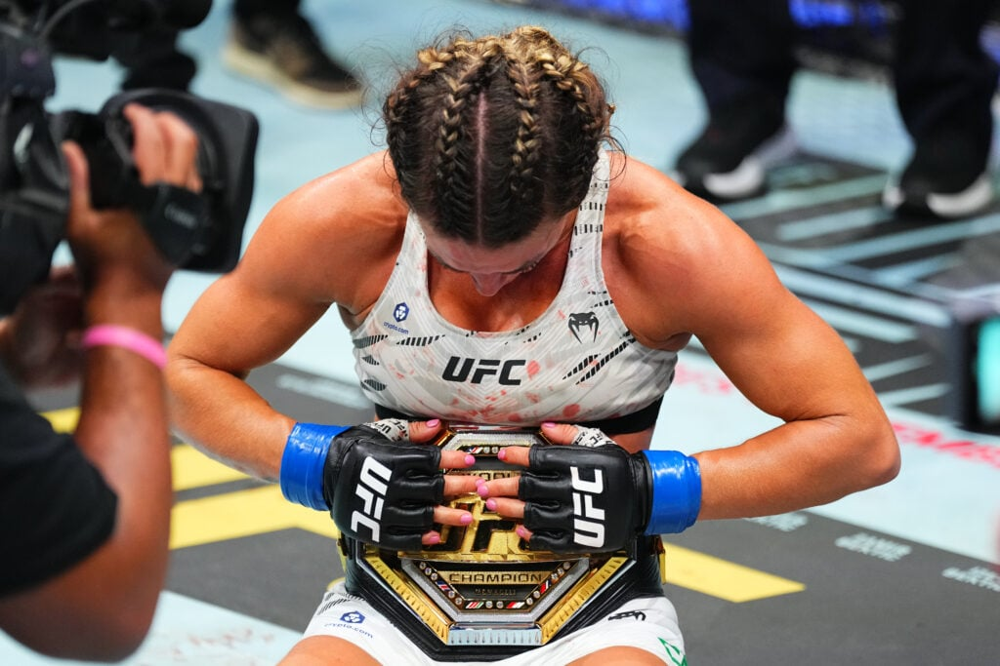
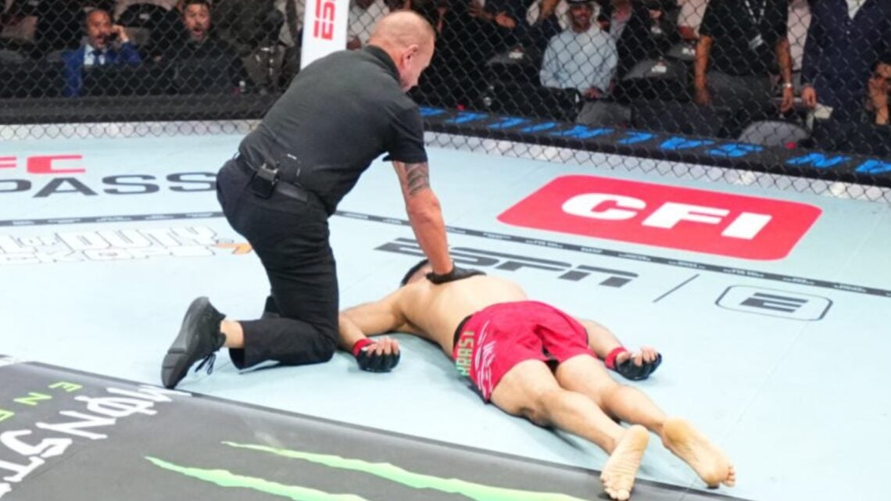
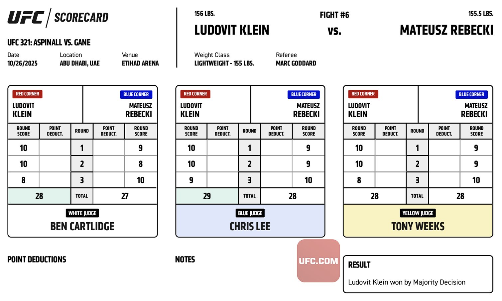
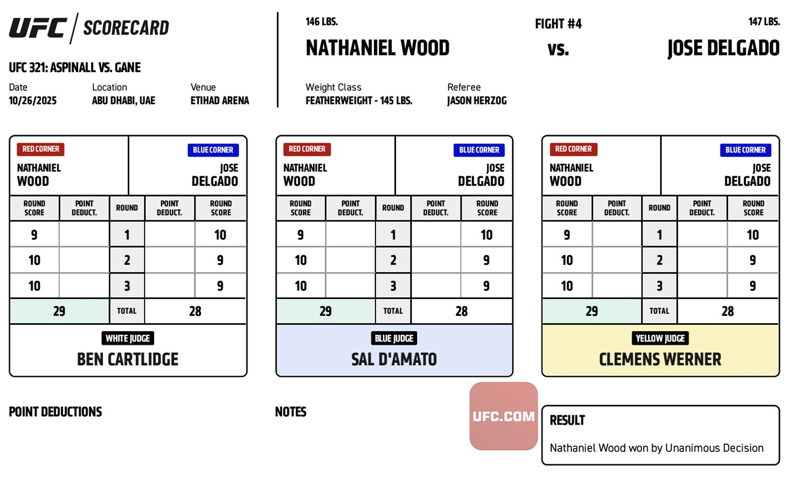
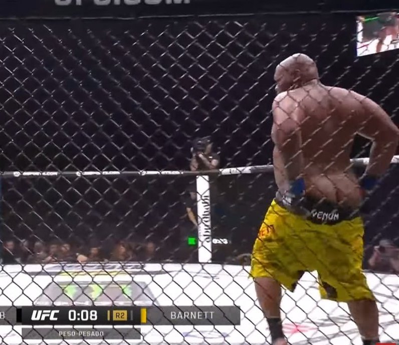

UFC 321 Aspinall vs. Gane Recap
Saturday 10.25.2025 at 10:00 AM ET • Abu Dhabi, United Arab Emirates
Table of Contents
- Summary
- Main Card
- Prelims
Summary
UFC 321 delivered a night of mixed emotions in Abu Dhabi, headlined by a highly anticipated heavyweight title fight that ended in controversy. The event showcased the depth of several divisions while exposing critical weaknesses in others. From devastating knockouts to grappling masterclasses, the card had its moments of brilliance, though the main event's abrupt ending left fans and the promotion in a difficult position.
The heavyweight division's legitimacy was put to the test as Tom Aspinall defended his title against Ciryl Gane, only for the fight to end in a no contest due to an accidental eye poke in the first round. In the co-main event, Mackenzie Dern captured the vacant strawweight title in a controversial matchup against Virna Jandiroba, while Umar Nurmagomedov bounced back from his title loss with a dominant grappling performance against Mario Bautista.
The prelims featured several highlight-reel finishes, including Quillan Salkilld's brutal head kick knockout and Azamat Murzakanov's statement-making KO of Aleksandar Rakić that propelled him into the light heavyweight top ten. Despite some strong performances, the overall event rating of 6.1/10 reflects a card that delivered action but left many questions unanswered, particularly regarding the future of the heavyweight division.
Main Card
Tom Aspinall vs. Ciryl Gane
Result: Ends in a No Contest, Accidental Foul (Eye Poke) at 2:00 Round 1 of 5
The most anticipated heavyweight title fight of the year ended in heartbreak and controversy. Tom Aspinall, promoted to undisputed champion after Jon Jones' retirement in June, faced his toughest test against the skilled striker Ciryl Gane. The narrative entering the bout centered on whether Aspinall's ferocious finishing ability—averaging just 2 minutes and 2 seconds per fight in UFC history—could overcome Gane's superior movement and striking defense.

The opening round revealed a different story than most expected. Rather than target practice against a stationary opponent, Aspinall found himself dealing with Gane's elite footwork and circling patterns. The French challenger came out aggressively, putting a hard pace on the champion and landing multiple clean jabs. By the end of the first frame, Aspinall's nose was visibly broken, and Gane appeared to be solving the puzzle that had confounded so many before him.
With approximately 90 seconds remaining in the round, disaster struck. Gane landed a nasty eye poke that caught both of Aspinall's eyes, immediately forcing the champion to turn away in visible distress. Unable to open his eyes, the fight was waved off and ruled a no contest. The heavyweight division now finds itself in limbo—Aspinall will require significant recovery time, leaving the UFC in a difficult position. Does Gane deserve an immediate rematch? Should the promotion move forward with Volkov, who earned his number one contender status earlier in the night? The answer remains unclear, but one thing is certain: the heavyweight division's legitimacy hangs in the balance once again.
Mackenzie Dern vs. Virna Jandiroba
Result: Decision, Unanimous at 5 Rounds, 25:00 Total
With Weili Zhang moving up to challenge Valentina Shevchenko at UFC 322, the vacant strawweight title was contested in what many considered one of the most controversial title fights in recent memory. Virna Jandiroba entered on a well-earned five-fight win streak, while Mackenzie Dern received the opportunity despite a 2-2 record in her last four fights and a ranking of seventh in the division. The matchup drew significant criticism during the build-up, with some suggesting it delegitimized women's MMA and questioning whether it deserved placement on a pay-per-view main card, let alone a title fight.

The pair had faced each other previously at UFC 256 in December 2020, with Dern taking a unanimous decision through her dominant ground game. Since that encounter, Jandiroba had shown marked improvement in her grappling, earning two submission victories. However, the rematch told a similar story. While Jandiroba was able to secure takedowns throughout the fight, she struggled to inflict significant damage from top position. Dern, conversely, proved most dangerous from her guard, landing strikes that progressively closed Jandiroba's eye over the course of the bout.
A controversial moment occurred in the second round when Dern appeared to throw a questionable up kick to a downed opponent, a foul that many observers felt should have resulted in a point deduction. The judges ultimately scored the contest in Dern's favor via unanimous decision, crowning her the new strawweight champion in what will likely remain one of the most debated title victories in recent UFC history. Regardless of the circumstances surrounding the matchup, Dern now holds championship gold and will look to prove she belongs among the elite.
Umar Nurmagomedov vs. Mario Bautista
Result: Decision, Unanimous at 3 Rounds, 15:00 Total
Fresh off his bantamweight title loss to Merab Dvalishvili at UFC 311 in January, Umar Nurmagomedov looked to bounce back against surging contender Mario Bautista. The American entered riding an impressive eight-fight win streak, including notable victories over Jose Aldo last October and Patchy Mix in June. Controversy surrounded the bout's implications—Nurmagomedov believed a win would earn him an immediate title rematch, while others, including champion Merab, insisted he needed to prove himself further.
The opening round set the tone for a thrilling back-and-forth battle. After Nurmagomedov shot for a takedown, Bautista threatened with a slick toe hold that momentarily put the Dagestani in serious danger. Somehow, Umar survived the submission attempt and reversed position, taking Bautista's back and spending the remainder of the round threatening his own submissions while landing ground and pound. The second frame began explosively with Bautista landing a vicious knee to Nurmagomedov's face, but the grappling ace quickly returned to his bread and butter, securing a body triangle that put the American in survival mode.
The fight ultimately became a tale of two distinct skill sets: Nurmagomedov's suffocating grappling versus Bautista's pressure striking. While Bautista found success pushing forward on the feet, he repeatedly put himself in vulnerable positions—including a caught front kick that led to another takedown. Despite numerous scrambles in the final round, Nurmagomedov's grappling dominance proved decisive, earning him a unanimous decision. Moving forward, Umar should fight at least once more before challenging Merab again; a matchup with the winner of Sean O'Malley's next bout makes sense. The reality is that Nurmagomedov hasn't shown enough improvement to overcome Merab's cardio and matched grappling in a five-round rematch. Hats off to Bautista, who silenced critics from his Aldo victory and proved he belongs among the bantamweight elite—a fight with Aiemann Zahabi could be next. The pace and fluidity displayed by Nurmagomedov remains unreal, cementing his status as one of the division's most dangerous fighters.
Alexander Volkov vs. Jailton Almeida
Result: Decision, Split at 3 Rounds, 15:00 Total
In an unspoken number one contender fight for the heavyweight title, Alexander Volkov faced submission specialist Jailton Almeida in a bout that would determine the next challenger. Volkov entered on a strong run, having won four straight before a controversial decision loss to Ciryl Gane at UFC 310 in December 2024. Almeida brought a two-fight win streak but carried concerns about his one-dimensional approach—when unable to secure early submissions, his fights became tedious affairs of lay-and-pray, as evidenced by his loss to Curtis Blaydes and uninspiring victory over Derrick Lewis.
The first round unfolded exactly as predicted. Almeida immediately shot for a takedown and brought Volkov to the canvas, flattening him out against the mat. However, the familiar pattern emerged: without an immediate submission, Almeida simply held position. After referee Marc Goddard warned him to work, Volkov reversed and landed the round's only meaningful damage with sharp elbows. The second round saw more of the same, with Almeida securing takedowns and sitting in Volkov's guard. Goddard stood them up at one point, but Almeida immediately shot another takedown and resumed his static top control for the remainder of the frame.
The third round proved decisive. Volkov landed crisp knees in the clinch early, inflicting damage that would ultimately sway the judges. Almeida continued his singular game plan, shooting takedowns and employing lay-and-pray tactics, but the lack of meaningful offense finally caught up with him. Volkov took the split decision, earning his shot at the heavyweight title. The result benefits the UFC significantly—Almeida's fighting style is extraordinarily dull, offering nothing when he can't impose his will early. The judges are beginning to penalize his inactivity, a trend that should continue. Volkov now awaits the resolution of the Aspinall situation, while Almeida must return to the drawing board. Without developing credible striking and improved cardio, he stands no chance against elite heavyweight competition. At this level, you cannot point fight—fighters like Aspinall or former champion Francis Ngannou will eventually connect and finish you.
Azamat Murzakanov vs. Aleksandar Rakić
Result: KO/TKO, Power Jab at 3:11 Round 1 of 3
This light heavyweight bout represented a potential changing of the guard, pitting the surging Azamat Murzakanov against veteran contender Aleksandar Rakić. The Austrian entered on a troubling three-fight losing streak, having fallen to the division's elite in Jan Blachowicz, Jiri Prochazka, and Magomed Ankalaev. In each contest, Rakić had performed well early before faltering, and with his UFC roster spot potentially on the line, he needed a statement victory. Murzakanov, meanwhile, had stormed through the division with a perfect 5-0 UFC record, positioning himself as a legitimate threat to the top ten.
The fight lasted just over three minutes. Murzakanov landed a devastating power jab that sent Rakić crashing to the canvas, emphatically announcing his arrival among the light heavyweight elite. With the victory, Murzakanov enters the top ten and moves within striking distance of title contention, while Rakić falls to an abysmal 0-4 in his last four outings. This likely marks the end of Rakić's UFC tenure—a disappointing conclusion for a fighter who showed flashes of brilliance but could never string together consistency against top competition.
In his post-fight interview, Murzakanov called for a number one contender bout, though the current landscape makes matchmaking complicated. Khalil Rountree will need time off following his recent loss to Prochazka at UFC 320, and Jamahal Hill is sidelined for approximately a year with a knee injury. Depending on Alex Pereira's next move, four top contenders currently stand without booked fights: Ankalaev, Prochazka, Carlos Ulberg, and now Murzakanov. A four-man tournament for the title makes sense—or if the belt becomes vacant, a Prochazka vs. Ulberg title fight with the winner facing the victor of Ankalaev vs. Murzakanov. The matchmaking largely depends on Pereira's decision, but one thing is clear: Murzakanov has earned his place among the division's best and is inching ever closer to championship gold.
Prelims
Quillan Salkilld vs. Nasrat Haqparast
Result: KO/TKO, Head Kick at 2:30 Round 1 of 3
Taking the fight on just ten days' notice, Quillan Salkilld faced a significant step up in competition for his third UFC appearance. Nasrat Haqparast entered riding a five-fight win streak and looking to secure a matchup against ranked opposition. The opportunity for Salkilld to make a statement came quickly and brutally. He landed a devastating head kick that left Haqparast unconscious before his body hit the canvas. The German remained out cold for several minutes, providing a sobering reminder of the dangers these athletes face every time they enter the octagon.
While a spectacular win for Salkilld, the knockout raises questions about his next move. Haqparast will require a lengthy layoff and medical clearance before returning, and his future path remains uncertain. For Salkilld, fighting another unranked opponent before pursuing ranked competition would be the prudent choice. The jump to ranked fighters represents too significant a leap at this stage. While highlight-reel knockouts like this build a fighter's brand and generate buzz, they don't necessarily contribute to well-rounded skill development. A measured approach will serve Salkilld better in the long run as he continues his UFC journey.
Ikram Aliskerov vs. Jun Yong Park
Result: Decision, Unanimous at 3 Rounds, 15:00 Total
Ikram Aliskerov entered the UFC with a sterling 13-1 record, his only loss coming against Khamzat Chimaev in Brave FC. After starting his promotional tenure 2-0, he received a fast-tracked opportunity against Robert Whittaker—albeit on short notice—that ended in a first-round knockout loss. He bounced back earlier this year with a first-round TKO of André Muniz at UFC Fight Night Kansas City, and now looked to extend his win streak against fan-favorite Jun Yong Park. "The Iron Turtle" has cultivated a loyal following since his 2019 debut despite mixed results, unable to secure the signature victory needed to break into high-profile matchups. Coming off a come-from-behind win over Ismail Naurdiev at UFC Baku in June, Park sought his third consecutive victory and a potential title eliminator.
The opening round moved at a deliberate pace with limited output from both men. Aliskerov demonstrated his grappling credentials by securing his first-ever UFC takedowns, controlling position but failing to capitalize with significant offense. The second frame continued in similar fashion—sporadic striking exchanges punctuated by Aliskerov's grappling control. He secured another takedown and established a hook on Park's left leg, but the positioning proved awkward. With Aliskerov failing to commit his full weight, Park maintained use of both hands, allowing both fighters to land strikes from the compromised position. Park escaped late in the round and connected with solid shots in the clinch before the bell.
Recognizing Aliskerov's fatigue entering the final frame, Park increased his pressure on the feet, throwing combinations to the body. Unfortunately for the Korean, Aliskerov secured a crucial double-leg takedown midway through the round with two and a half minutes remaining. He took Park's back, locked in a body triangle, and spent the remainder of the fight threatening with ground-and-pound and rear-naked choke attempts. The control time proved enough to secure the unanimous decision for Aliskerov, who now looks to build momentum in the always-competitive middleweight division. Park, despite the setback, showed his trademark toughness and will look to rebound in his next outing.
Ľudovít Klein vs. Mateusz Rębecki
Result: Decision, Majority at 3 Rounds, 15:00 Total
In a compelling European lightweight clash, both fighters entered seeking redemption from recent decision losses to elite competition. Mateusz Rębecki had fallen to surging contender Chris Duncan, while Ľudovít Klein dropped a bout to perennial powerhouse Mateusz Gamrot. The stylistic matchup promised fireworks: Klein's measured, precise striking against Rębecki's forward-pressure brawling style. The contrast manifested immediately, with Rębecki attempting five takedowns in the opening round—all unsuccessful thanks to Klein's significantly improved takedown defense since the Gamrot fight.

Klein dominated through the first two rounds, efficiently picking apart Rębecki on the outside while choosing his shots with calculation. The Slovak fighter's striking accuracy and defensive improvements shone through as he pieced up his opponent and inflicted substantial damage. However, the third round brought drama. Rębecki finally secured a takedown midway through and immediately went to work, landing heavy ground-and-pound and sharp elbows from top position. During the onslaught, Klein managed to land an elbow from the bottom that opened a massive gash on Rębecki's face. Blood poured from the wound, but the Polish fighter remained undeterred, continuing to advance his position and attempting to secure a crucifix. He kept swinging until the final bell, though his late rally came too little, too late.
The scorecards reflected the competitive nature of the bout: 29-28, 28-27, and 28-28 for a majority decision victory for Klein. After the final horn, Klein remained on the canvas, revealing that his ankle had been broken during a grappling exchange against the cage in the third round. The injury likely explains his inability to escape Rębecki's ground control—the excruciating pain combined with the inability to stand made any escape attempts nearly impossible. Klein's grappling has improved dramatically since the Gamrot loss, and aside from the third-round submission attempts with a broken ankle, he appeared much more composed in those exchanges. Following what will certainly be a lengthy recovery period, Klein deserves a step up in competition—a bout against surging prospect Mauricio Ruffy would make excellent sense.
Valter Walker vs. Louie Sutherland
Result: Submission, Heel Hook at 1:24 Round 1 of 3
Brother of former light heavyweight contender Johnny Walker, Valter Walker has carved out his own identity in the heavyweight division with a remarkable submission streak. Entering this bout, he had won his last three UFC fights via first-round heel hook—a pattern that speaks either to his elite Brazilian jiu-jitsu or the concerning lack of grappling fundamentals in the heavyweight division, or perhaps both. Louie Sutherland made his promotional debut after his original UFC bout was canceled in September at UFC Perth against Justin Tafa. Prior to joining the organization, the Englishman had found success on the regional scene, capturing the heavyweight championship of Amsterdam's Levels Fight League.
Walker kept his incredible streak alive with yet another first-round heel hook, making it four consecutive identical finishes. The performance was nothing short of spectacular for the rising heavyweight, who continues to expose the grappling deficiencies of his opponents. Currently ranked 15th by the UFC, Walker has clearly outgrown his current position and deserves a significant step up in competition. In his post-fight interview, he called out Hamdy Abdelwahab—referring to him as "Chocolate Peppa Pig"—though matchmakers might consider more established opponents. Kennedy Nzechukwu or Marcin Tybura would provide appropriate tests to see if Walker's submission wizardry can translate against more experienced heavyweights. One thing is certain: Walker has become must-watch television every time he enters the octagon.
Nathaniel Wood vs. Jose Delgado
Result: Decision, Unanimous at 3 Rounds, 15:00 Total
Jose Delgado entered this bantamweight contest riding momentum from consecutive UFC victories and his Contender Series win, having finished all three of his opponents. The young prospect faced a substantial jump in competition against Nathaniel Wood, a promotional veteran since 2018 who has faced the division's best. The opening round delivered an absolute war. Delgado came out with lightning speed and agility, landing a spectacular high kick followed by a spinning back fist that appeared to spell doom for Wood. Somehow, the Englishman weathered the early storm and survived the round.
Not only did Wood survive Delgado's initial onslaught, but he also scored his own knockdown later in the first frame, evening the score in dramatic fashion. Blood poured from a nasty cut atop Wood's nose as both men continued to trade heavy leather. The violent exchanges continued into the third round, with both fighters refusing to take a backward step. In the end, Wood appeared to land the more telling blows—particularly crisp left hooks and straight jabs that drew increasingly unfavorable reactions from Delgado as the fight progressed. The judges unanimously scored the bout 29-28 for Wood, a decision that came as a surprise given the competitive nature of all three rounds. The veteran's experience and ability to survive the early adversity ultimately proved the difference in a thrilling bantamweight scrap.
Hamdy Abdelwahab vs. Chris Barnett
Result: Decision, Unanimous at 3 Rounds, 15:00 Total
Chris Barnett returned to the octagon exactly one year after suffering a devastating injury on this same card. At UFC 320 in Abu Dhabi, he had seriously injured his leg while jumping during the pre-fight announcement, then proceeded to get knocked out by Kennedy Nzechukwu in the first round. Now, after a year-long recovery, he faced Egyptian fighter Hamdy Abdelwahab, who entered 1-1 in the UFC with a decision loss to Mohammed Usman. As a 2016 Greco-Roman Olympian and the first Egyptian fighter in UFC history, Abdelwahab brought legitimate wrestling credentials and looked to make a statement against the returning veteran.
The opening round unfolded according to plan for the Egyptian. He immediately pressed forward, securing early takedowns with ease and flattening Barnett against the canvas. The wrestling Olympian nearly finished the fight before Barnett managed to return to his feet, but Abdelwahab's grappling expertise quickly grounded him again. Disaster struck when Hamdy landed an illegal strike to the back of Barnett's head. Referee Marc Goddard immediately stopped the action and deducted a point—the correct decision, though the circumstances were difficult. Barnett lay flat on the ground covering his face and moving his head, suggesting Abdelwahab may not have intentionally targeted the illegal area but lost control while trying to finish. The optics following the timeout concerned many observers, with Barnett clutching the back of his head—a sobering reminder of the serious dangers posed by such strikes.
Barnett looked defeated entering the second frame as Hamdy continued his grappling dominance. However, criticism emerged regarding Abdelwahab's striking output—he failed to land any devastating blows in the second round, possibly due to timidity after the point deduction or simple fatigue. Both heavyweights entered the third round visibly exhausted, their dramatically reduced output reflecting their depleted gas tanks. Hamdy maintained his grappling approach, securing another early takedown, but again failed to land significant strikes. At heavyweight, this represents a critical flaw—you cannot point fight at this weight class. Elite finishers like Aspinall or former champion Francis Ngannou will eventually connect and end the fight. Barnett offered virtually no offense throughout the entire bout, likely failing to land even a single significant strike. Moving forward, Abdelwahab must develop his striking game and dramatically improve his cardio. In his current state, he would lose to every ranked heavyweight contender—and that's particularly concerning given the overall weakness of the division.
Mitch Raposo vs. Azat Maksum
Result: Decision, Unanimous at 3 Rounds, 15:00 Total
Mitch Raposo entered this bantamweight bout surrounded by hype following his dominant run on the regional scene, where his grappling prowess made him nearly unstoppable. However, his UFC tenure had begun poorly, starting 0-2 and raising questions about whether he deserved his roster spot—particularly given the controversial circumstances surrounding his canceled Contender Series bout. Azat Maksum brought his own controversy to the cage, missing weight by three pounds and coming in at 129 pounds. The Kazakhstani forfeited 30 percent of his purse to Raposo as penalty, adding another wrinkle to an already intriguing matchup.
The opening round produced minimal action, with neither fighter establishing significant offense. Maksum controlled the pace through his grappling, dragging Raposo around the octagon, though the American eventually returned to his feet. Unfortunately, too little time remained for Raposo to mount meaningful offense. Between rounds, Raposo's corner emphasized keeping the fight standing and increasing his output volume. He executed the game plan perfectly in the second, showcasing excellent footwork and head movement to evade Maksum's attacks while landing lethal left and right hooks on the Kazakhstani. Maksum threw desperate takedowns late in the round but couldn't secure control, making it a clear 10-9 for Raposo.
Maksum entered the third round visibly fatigued, his takedown attempts lacking the intensity and effectiveness of earlier rounds. Even when he secured position, he generated no submission threats or meaningful damage. Raposo continued his striking success, evading attacks and landing clean shots as Maksum zombie-walked forward into the fire. With approximately one minute remaining, Maksum shot a takedown that Raposo sprawled out of and reversed. From mount, Maksum blatantly grabbed the fence, prompting the referee to immediately deduct a point. Ultimately, the deduction proved inconsequential—Raposo would have won the decision regardless. The bout highlighted an important trend in judging: Maksum attempted to grapple throughout but accomplished nothing meaningful with his control time. The judges rightfully prioritized damage over empty control, a principle that should govern all MMA scoring. This marked a significant first victory for Raposo in the UFC, providing crucial momentum after a difficult start to his promotional career.
Mizuki Inoue vs. Jaqueline Amorim
Result: Decision, Unanimous at 3 Rounds, 15:00 Total
Mizuki Inoue entered this strawweight bout as a massive +360 underdog, coming off a two-year layoff that made the odds seem justified. The vast majority of the MMA community agreed with this assessment, as nearly every YouTube analyst and journalist predicted Jaqueline Amorim would secure a quick submission victory. From the opening bell, both women's game plans became immediately apparent: Amorim sought to drag the fight to the ground and overwhelm Mizuki with relentless pressure and submission attempts, while the Japanese fighter aimed to keep the action standing where she held the advantage.
The first round saw Amorim achieve her objective, taking Mizuki down and threatening with a rear-naked choke and arm triangle. However, Mizuki displayed excellent defensive awareness, surviving the submission attempts and dramatically reversing position. Once on top, she unleashed devastating ground-and-pound to steal the opening frame. The pattern established in the first continued through the second round, with Mizuki controlling the fight and inflicting damage both standing and on the ground, keeping Amorim's advances at bay with improved defensive grappling and superior striking.
Entering the third round, momentum had clearly shifted entirely to Mizuki. Amorim looked not only physically exhausted but morally defeated, her earlier confidence completely evaporated. Mizuki maintained her pressure in the final frame and opened a severe cut on the Brazilian's face. The visual of Mizuki's face becoming completely red, covered in Amorim's blood, provided one of the night's most striking images. Mizuki secured the victory with all three judges scoring in her favor, though one judge's 29-28 scorecard raised eyebrows. While one could argue for Amorim taking the first round depending on how heavily "effective grappling" is valued over damage and position reversals, the close score seemed like questionable judgment given Mizuki's dominant performance. The victory improves Mizuki to 3-1 in the UFC strawweight division, and it will be fascinating to see what matchmakers have in store for the surging Japanese fighter who proved all the doubters spectacularly wrong.